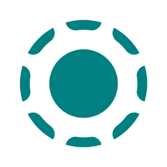
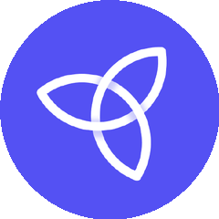
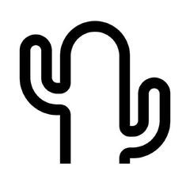

让生活变简单 · 五个开源工具
画图
不用
学设计
传文件
不用
数据线
diagram-design
localsend
everyone-can-use-english
ppt-master
needle
100m80m60m40m20m
#01
图表模板
画图直接套模板
cathrynlavery / diagram-design
二十九套编辑级图表模板，自包含 HTML 文件，打开直接改成自己的
29 套 · 开箱即改
29 套模板
开箱即改
专业编辑级
让流程图有杂志感
#02
跨端传输
手机电脑隔空互传
localsend / localsend

同一局域网里手机电脑隔空互传，不挑系统，不用登录云盘
开源 · 跨平台 · 免费
无网互传
跨平台
87K 人在用
没有围墙的隔空投送
#03
英语自学
把英语用起来
ZuodaoTech / everyone-can-use-english

开源英语学习方法，按自己节奏在真实场景里把英语真正用起来
3.6 万人 · 共练社区
开源方法
按自己节奏
3.6 万人共练
学英语不用报班背单词
| 00| 25| 50| 75| 99
#04
AI 做 PPT
文档交给 AI 出 PPT
hugohe3 / ppt-master

把文档丢给 AI，直接生成带动画和数据图表的原生 PPT，还能自动配音讲解
原生形状 · 自动配音
文档变 PPT
原生动画
自动配音
把 PPT 这件事交给 AI
#05
端侧小模型
手机离线跑 AI
cactus-compute / needle

十四兆的基础模型，塞进手机手表，离线也能跑 AI
14MB · 端侧 · 离线
14MB 体积
手机能跑
离线可用
塞进口袋的 AI 大脑
diagram-design
localsend
english
ppt-master
needle
这五个工具你最想试哪个？
关注我 · 下期见